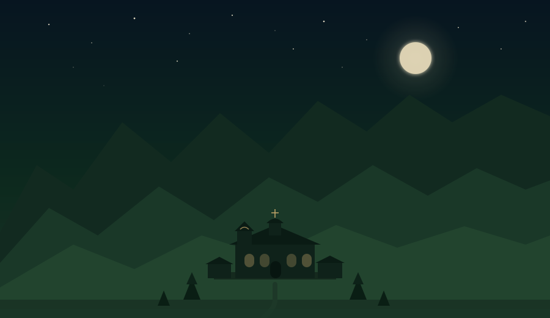
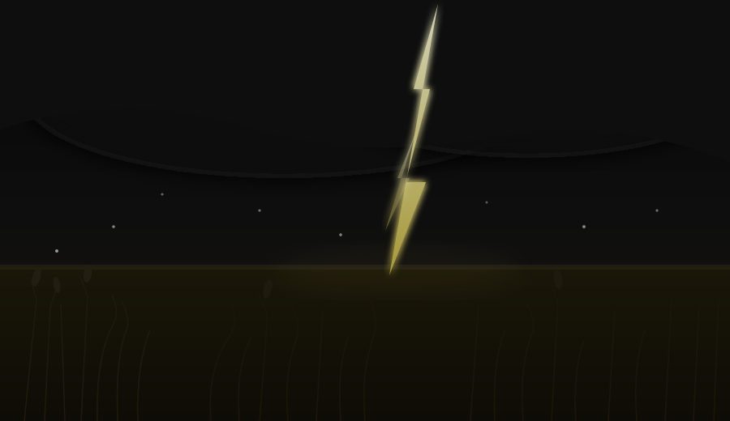
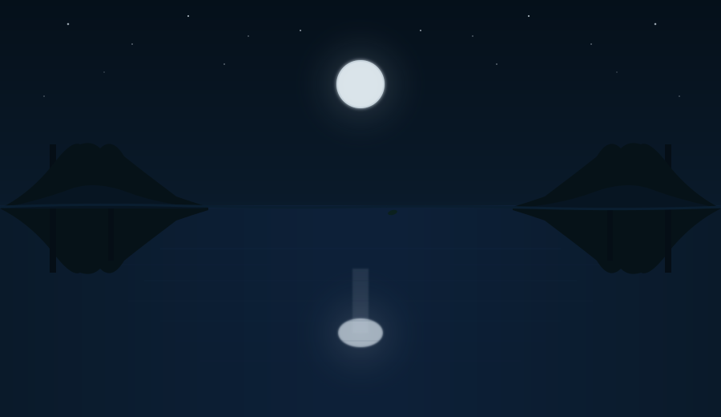

Храм
Вазов описва природата като храм, по-величествен от всеки друг. Докато светът е изпълнен с „злини, тревоги", планината му носи „свещен, отраден мир". Тя е пространство на свобода, противопоставено на обществото.
Природата като образ на Бога,
съдбата и красотата
Сравнителен анализ върху три творби
от българската литература
Вазов · Яворов · Славейков
Доника Саркизова & Георги Попов, 11 „Д" клас, 2025/2026
Краят на деветнадесети и началото на двадесети век е период на значими обществени и духовни промени след Освобождението. Българското общество търси нова посока. Писателите все по-често се обръщат към природата, не като просто пейзаж, а като пространство, в което човекът търси отговори за смисъла на живота, за мястото си в света и връзката с божественото.
Трима автори. Три коренно различни отговора на един и същи въпрос.

„Природата всегда, но буйната природа,
що пълни я живот, шум, песен и свобода,
бе моят идеал величествен и прост"
Забележете думата „идеал". Не любим пейзаж, не приятно място, идеал. Нещо, към което се е стремяло цялото му същество. Природата е вечна и съвършена, и именно това я прави ценност.
Вазов описва природата като храм, по-величествен от всеки друг. Докато светът е изпълнен с „злини, тревоги", планината му носи „свещен, отраден мир". Тя е пространство на свобода, противопоставено на обществото.
„моят ум хвъркат / блуждае в хаоса, до господа отива", чрез балкана лирическият говорител се доближава до божественото. Вазов не отрича Бога, той го търси навън, в природата, а не в каменните сгради.
„Сега съм у дома" е анафора, която се повтаря седем пъти из цялата ода. Истинският дом на Вазов вече не са хората, природата е описана като майка, която го прегръща и лекува духа му.
Пейо Яворов преобръща напълно Вазовата картина. В поемата „Градушка" природата не е храм, не е майка. Тя е разрушителна стихия, която безмилостно унищожава труда и надеждата на селяните.
Чувате ли ритъма? „Една, че две, че три", броенето имитира самата градушка. Повторението не е украса, то е структурата на бедствието. Яворов ни потапя в страданието още от първия ред, показвайки вечната борба на хората с повтарящото се бедствие.

„Град!парчетаяйцеиорех“
Три думи, свързани с тирета като удари. Яйце. Орех. Градацията на размера символизира безпощадната съдба. Яворов не обяснява щетите, той ги показва в конкретен образ и ни оставя да довършим сметката сами. Виковете на селяните: „Труд кървав, Боже, пожалей!", предават целия ужас и безсилие на човека.
Природата е безразлична към усилията на селяните. Не враг, а неумолима и непредсказуема съдба. Тя не мрази човека, просто не го вижда.
При Вазов планината е вечна и сигурна. При Яворов земята е едновременно извор на живот и гробище. „Нивята грозно опустели", образ, който внушава не само материална, но и духовна загуба. Целият труд може да изчезне за двадесет минути.
Селянинът може само да се моли на Бог. Но природата остава безразлична, надеждата е унищожена, оставяйки хората да се изправят сами пред съдбата.
А ако природата просто... мълчи?

„Треперят, шептят белостволи буки"
„Треперят, шептят", дори движението при Славейков е тихо. Не виковете на природата, не бурята на живота. Трепет. Шепот. Природата не изисква борба или преклонение, само способността да замълчиш и да се потопиш в нейното съвършенство.
Ключов е мотивът за отражението в „тъмни глъбини". Езерото отразява не само небето, но и вътрешния свят на човека. Когато е спокойно, може да отрази красотата на света.
„Дори лист отронен" не нарушава хармонията. Листото пада, но светът не се разпада. Хармонията поглъща всяко движение. Покоят е устойчив и съвършен.
Тук се срещаме пак с думата „идеал", но колко различно от Вазов. При Вазов идеалът е буен, жив, шумен. При Славейков идеалът е тихият и съвършен вътрешен покой. Не борба, не преклонение, само присъствие.
Три автора. Три цвята. Три думи.
„Природата е едновременно огледало, храм и фактор, определящ съдбата ни."
Тримата автори не си противоречат, те се допълват. Вазов казва: природата те издига. Яворов казва: природата те смазва. Славейков казва: природата те отразява. И трите неща са верни, зависи откъде гледаш.
Природата в българската литература не е просто пейзаж, а активен участник в живота и духовната идентичност на хората. Тя може да утешава и вдъхновява, но и да ни изправя пред изпитания, отразявайки индивидуалната душевност, конфликтите между хармония и хаос, и времето в историята.
Може би именно затова тези творби се четат и сто и двадесет години по-късно. Не защото са исторически. А защото природата около нас все още задава същите въпроси.
Благодарим за вниманието.
Доника Саркизова & Георги Попов, 11 „Д" клас